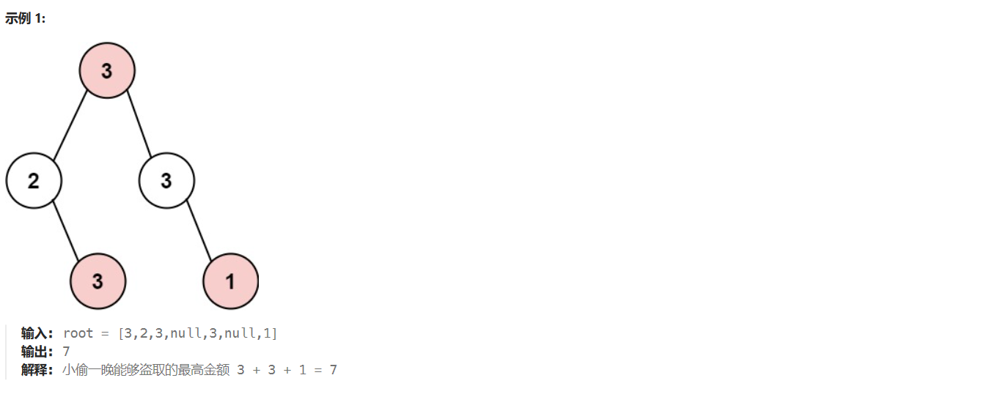

# 题目描述
小偷又发现了一个新的可行窃的地区。这个地区只有一个入口，我们称之为 root 。
除了 root 之外，每栋房子有且只有一个 “父 “房子与之相连。一番侦察之后，聪明的小偷意识到 “这个地方的所有房屋的排列类似于一棵二叉树”。 如果 两个直接相连的房子在同一天晚上被打劫 ，房屋将自动报警。
给定二叉树的 root 。返回 在不触动警报的情况下 ，小偷能够盗取的最高金额 。

# 解题思路
首先题目是以二叉树为基础的，这就涉及到了树形 dp。
我们访问或者处理二叉树上的某个结点时需要动用遍历的方式（前中后三种遍历）找到要操作的结点。对于本题来说是一定要遍历整个树中的每一个结点才能决定出最优解。
我们都知道，动态规划就是通过前者或者后者的状态进而推断出当前的状态，使用二叉树这种结构是自上而下单向的，也就是说结点会有指针指向孩子结点，但是结点一般情况下不会有指针指向上层父节点。
这就意味着我们在本题中，想要求得当前结点的状态，就需要我们先获取左右子结点的状态，进而才能得到当前结点的状态。这种状态的获取顺序是自下而上的，所以我们从树底开始获取状态，直到树根时，我们对树根的 dp 中的极值输出，即可得到我们想要的。
# dp 数组定义和含义
每个结点都有两种状态，一种是选择该结点，一种是不选择该结点，所以我们可以让每个结点都有一个 dp 数组，dp [0] 代表没有选择该结点的情况下的总价值，而 dp [1] 表示选择了该结点的情况下的总价值。
当然我们可以在每个结点的递归函数中定义属于该结点的 dp 数组，然后将 dp 返回给上一层结点，供上一层结点选择判断。
# 遍历顺序：
为什么不用前序遍历：前序遍历的顺序：根节点 - 左结点 - 右节点。这样会先访问根节点，但是本题是要自下而上求解的，根节点需要左右子节点的状态才能判断出是否选择根节点，但是此时先访问到了根节点，子节点都还没访问，因此违背了自下而上的状态求解顺序，故前序遍历无法解决该问题。
为什么不用中序遍历：中序遍历访问顺序为：左孩子 - 根节点 - 右孩子结点。我们在对根节点进行判断时需要左右孩子结点的数据，但是这里只有左孩子结点可以提供数据，右孩子提供不了。所以中序遍历无法解决该问题。
为什么用后续遍历：后续遍历的访问顺序为：左孩子 - 右孩子 - 根节点。我们发现后续遍历会先处理完左右结点然后再处理根节点，符合自下而上的状态求解顺序，故后续遍历可以解决该问题。
# dp 数组的初始化
# 方法 1：
因为我们是自下而上的，并且每个结点都有自己的 dp 数组。如果我们此时递归到了最底层的叶子结点，那么我们可以将 dp [0] 设置为 0，dp [1] 设置为当前结点的价值，然后将 dp 数组作为返回值返回给上一层结点使用。
只需要把树的最底层的叶子结点的 dp 设置好即可，其他结点会根据下面的结点返回的 dp 自行调整自己的 dp。
# 方法 2：
其实我们只需要设置一个条件，当递归函数碰到空结点时，直接返回 0，空结点上层的叶子结点会根据空节点返回的 0 和自己的价值进行对比，然后会自动设置自己的值。其实我们可以不用管 dp 数组的初始化，只需要在递归函数中设置一个判空节点的条件即可。
# 递归函数与状态转移方程
# 递归函数 - 半成品
回忆一下：当前结点的状态需要左右孩子的 dp 数组情况来判断，并且每个结点都有一个 dp 数组，而且也要判断当前结点是否是树底部的叶子结点，如果是的话还要做好 dp 初始化的工作等等（初始化这里我们用到是方法二）。遇到空节点应该如何处理的情况。
// 函数返回值是一个容器，这也代表了递归函数要返回结点的 dp 数组 | |
vector<int> robTree(TreeNode* cur) | |
{ | |
// 遇到空节点直接返回 0，终止接着遍历 | |
if(cur == nullptr){ | |
return vector<int>(0,0); | |
} | |
// 开始后续遍历 | |
//left 和 right 代表分别左右孩子的 dp 数组，一会状态方程会使用他们 | |
vector<int> left = robTree(cur->left);// 递归左孩子 | |
vector<int> right = robTree(cur->right);// 递归右孩子 | |
/* 未完 - 稍后会写出完成的 */ | |
/* 状态转移方程 */ | |
/* 返回语句 */ | |
} |
# 状态转移方程
首先定义两个变量 value1，value2。前者表示偷当前结点时的最大价值，后者表示不偷当前结点的最大价值。
注意：cur 表示当前结点，val 表示当前结点的价值，left 和 right 表示左右孩子的 dp
偷当前结点的方程 (如果偷的话，则当前结点的值和左右孩子的 dp [0] 相加)
value1 = cur->val + left[0] + right[0];
不偷当前结点的方程 (判断是偷左孩子结点还是右孩子结点，选取最大情况)
value2 = max( left[0] , left[1] ) + max( right[0] , right[1] );
最后将 value1 和 value2 作为 dp [0] 和 dp [1] 传递给上一层结点。
# 完整的递归函数
// 函数返回值是一个容器，这也代表了递归函数要返回结点的 dp 数组 | |
vector<int> robTree(TreeNode* cur) | |
{ | |
// 遇到空节点直接返回 0，终止接着遍历 | |
if(cur == nullptr){ | |
return vector<int>(0,0); | |
} | |
// 开始后续遍历 | |
//left 和 right 代表分别左右孩子的 dp 数组，一会状态方程会使用他们 | |
vector<int> left = robTree(cur->left);// 递归左孩子 | |
vector<int> right = robTree(cur->right);// 递归右孩子 | |
// 偷当前结点 | |
int value1 = cur->val + left[0] + right[0]; | |
// 不偷当前结点 | |
int value2 = max( left[0] , left[1] ) + max( right[0] , right[1] ); | |
// 最后将 value1 和 value2 作为 dp [0] 和 dp [1] 传递给上一层结点 | |
return {value1 , value2}; | |
} |
# 主函数的写法 - 最后一步
我们只需将树根节点传入到递归函数，然后等待递归函数将树根节点的 dp 数组返回给我们，然后我们在树根节点的 dp [0] 和 dp [1] 之间选择最大值输出即可。
int rob(TreeNode* root){ | |
// 接收树根节点的 dp | |
vector<int> dp = robTree(root); | |
// 输出最大值 | |
return max(dp[0] , dp[1]); | |
} |
# 完整题解代码
class Solution{ | |
public: | |
int rob(TreeNode* root){ | |
// 接收树根节点的 dp | |
vector<int> dp = robTree(root); | |
// 输出最大值 | |
return max(dp[0] , dp[1]); | |
} | |
// 函数返回值是一个容器，这也代表了递归函数要返回结点的 dp 数组 | |
vector<int> robTree(TreeNode* cur) | |
{ | |
// 遇到空节点直接返回 0，终止接着遍历 | |
if(cur == nullptr){ | |
return vector<int>(0,0); | |
} | |
// 开始后续遍历 | |
//left 和 right 代表分别左右孩子的 dp 数组，一会状态方程会使用他们 | |
vector<int> left = robTree(cur->left);// 递归左孩子 | |
vector<int> right = robTree(cur->right);// 递归右孩子 | |
// 偷当前结点 | |
int value1 = cur->val + left[0] + right[0]; | |
// 不偷当前结点 | |
int value2 = max( left[0] , left[1] ) + max( right[0] , right[1] ); | |
// 最后将 value1 和 value2 作为 dp [0] 和 dp [1] 传递给上一层结点 | |
return {value1 , value2}; | |
} | |
}; |